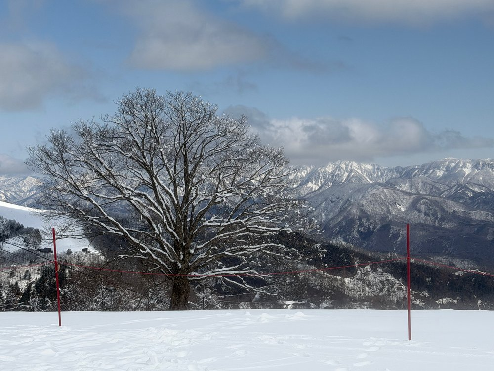
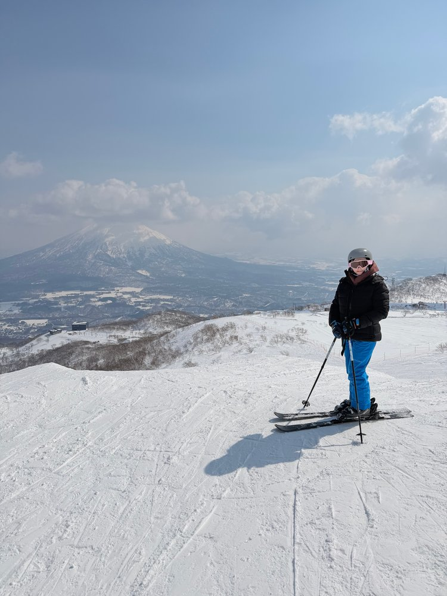
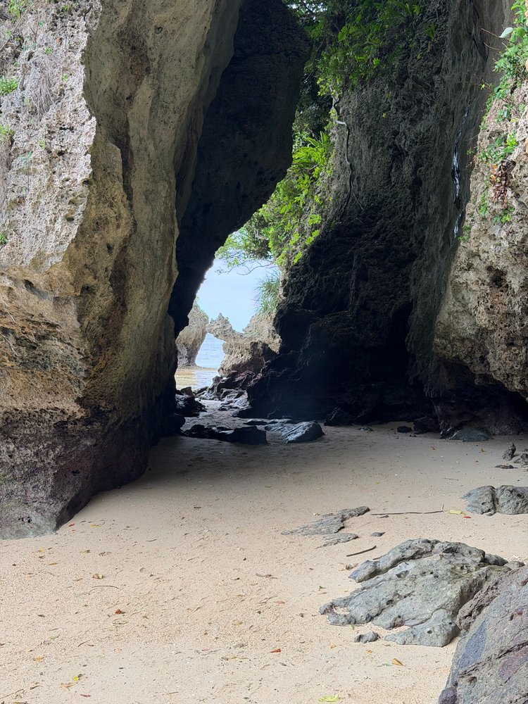

Japó 2026
De la neu al blau
27 febrer — 11 abril 2026Honshu, Hokkaido i Okinawa–Yaeyama.
Un viatge en fotografies i records.

01 / L’ILLA PRINCIPAL
Honshu
Anada · 28 febrer – 11 marçTornada · 20–23 març · 7–11 abril

02 / CAP AL NORD
Hokkaido
11–19 març 2026

03 / LES ILLES DEL SUDOkinawa
Okinawa
— Yaeyama
24 març – 7 abril 2026
EL FIL DEL VIATGE
Els llocs, en el mapa.
La línia segueix l’ordre de les visites; no representa el recorregut exacte. Els marcadors amb contorn discontinu indiquen una localització aproximada, sense GPS.
HonshuHokkaidoOkinawa–Yaeyama